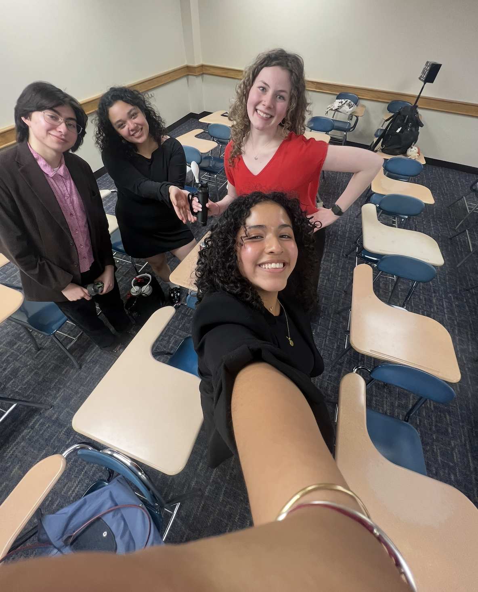
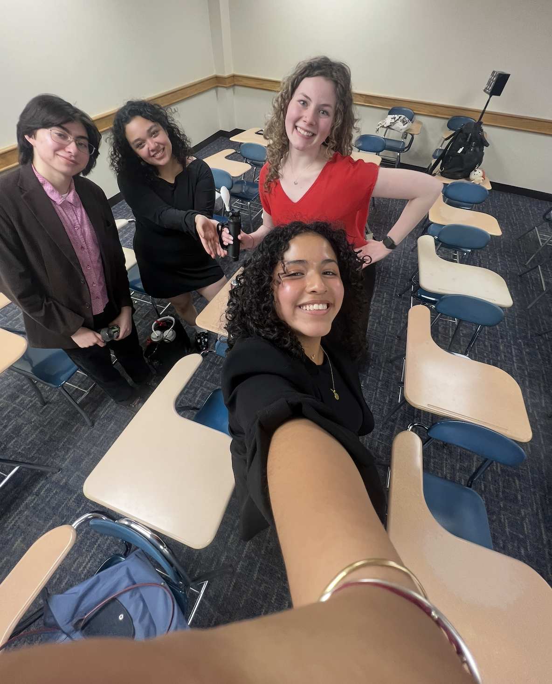

%% Assistive Eating Utensil %%
← Back to Main


Key Specifications
- 6 oz total weight
- 2.6 hour operating time
- 194 mA current draw
- 9V battery
- 10.5 × 1.875 × 2.125 inches
Mechanically Actuated Assistive Eating Utensil
Designed a portable, servo-actuated eating utensil to assist individuals with reduced dexterity or involuntary hand movements. The device stabilizes the utensil head using real-time motion data from an accelerometer, helping users eat with greater control and independence.
Key Features
- Adafruit ADXL343 accelerometer and Arduino Nano for real-time motion sensing
- Dual servo motors mounted perpendicularly to adjust pitch and roll
- Compact housing with 3D-printed structure and secure hand strap
- Easy-access battery cap and large, user-friendly activation button
Performance Metrics
- 76% reliability in motion counteraction (roll), 100% in pitch
- Runtime: 2.6 hours on 9V battery
- Weight: 6.0 oz
- Cost: $86.25 (under $100 target)
- Not food-safe (PLA material); waterproofing and material upgrades planned


Achieved 100% pitch accuracy and 76% roll rate using MPU6050 motion sensor.

Technical Contributions
- Developed Arduino control logic to convert accelerometer data into servo motion
- Filtered motion input to reduce reaction to voluntary movements
- Assisted in sensor integration and dual-accelerometer testing
Lessons Learned
- Adapted to hardware and sensor constraints by switching from MPU6050 to ADXL343
- Gained experience in collaborative design, time management, and iterative testing
- Learned to balance accessibility, performance, and design trade-offs in engineering
 

McDonald led housing design and Vidal focused on assembly and circuitry.
Applebaum and I collaborated on the circuit's hardware and code.